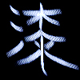
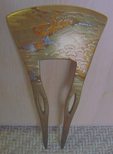
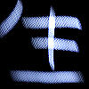
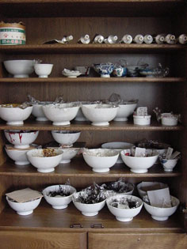
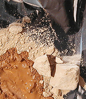
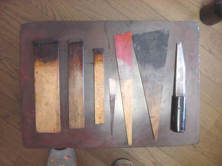

Laque
japonaise
KI-URUSHI
Les photos illustrant cet article ont été prises
par Shinji YAMADA dans l'atelier de Keisuke ASAI (Japon). Nous les remercions tous les deux
pour leur aide précieuse.
Les mots japonais sont écrits en
majuscules, à la manière japonaise.
|
L'Occident doit presque tout au Japon dans le domaine de la laque. DUNAND, initié
vers 1912 par SUGAWARA et surtout Katsu HAMANAKA, qui résida en France, n'ont
pas seulement introduit cette technique à l'Ouest du continent - et
particulièrement à Paris - : ils en ont fait un procédé nouveau, participant
très activement aux innovations de l'Art Moderne. Des artistes chinois,
connaissant la laque "sumac" (japonaise et continentale) et la
laque "Coromandel" (continentale), y ont contribué également.

La laque japonaise traditionnelle est réalisée avec
la résine extraite du tronc de l'arbre URUSHI (symbole ci-contre). Elle n'a rien à voir techniquement et chimiquement parlant avec la gomme laque des côtes du
Coromandel que nous connaissons habituellement en France et qui n'est diluable que dans
l'éthanol. On
retrouve la laque à base de résine d'URUSHI sur le continent : en Chine, en Corée, à Taiwan, au Vietnam, en Thaïlande et au
Myanmar (anciennement Birmanie). Elle a probablement été la première laque du
monde.
Cette résine peu ordinaire est une
émulsion
naturelle. Elle peut donc être diluée
avec de l'eau ou de l'essence. Le plus souvent, elle est dilué avec de la
térébenthine
ou une essence de pétrole mais
il existe certains traitements à base d'eau.
|
Sommaire
La matière première,
les précautions à prendre, le champ d'application
Description
du procédé
-
Un
produit qui n'est pas anodin
-
URUSHI
et KI-URUSHI
-
Préalable
: outils de polissage
-
Étape
KIJIGATAME
-
Étapes
SHITAJI et SHITAJIGATAME
-
Étape
NAKANURI
-
Étapes
finales
-
Pigmentation
et SUKI-URUSHI
-
UWA-NURI-URUSHI
-
Séchage
Notes
Substituts occidentaux
|

La matière première,
les précautions à prendre, le champ d'application
L'arbre URUSHI n'est autre qu'un
sumac, rhus
vernacifera, dit aussi "arbre à laque" ou "vernis du Japon",
arbuste de la famille des anacardiacées (cotinus, faux poivrier, manguier,
pistachier, sumac, des térébinthacées) poussant surtout au Japon et en Chine où il donne d'ailleurs, à
l'état brut une sève, un colorant jaune, ARAMI-URUSHI.
Rhus vernaciflua (Japon, Chine, Corée), rhus succedanla (Taïwan et
Vietnam) et melanorrhoea usitata (Thaïlande, Myanmar) semblent bien les seules variétés permettant de
réaliser les laques. Rhus coriaria, le somagh persan (dit "vinaigrier"
en France), donne une épice. Parmi les variétés d'Amérique (sumac de
Virginie, rhus typhina), on trouve des plantes aux
propriétés vraiment très toxiques. Un peu partout dans les zones tropicales,
pousse rhus mollis, "sumac amarante", cultivé pour sa beauté,
la coloration rouge de ses feuilles. Toute tentative
d'élaboration d'une laque avec un sumac mal identifié et non certifié pour
cet usage est non seulement aléatoire mais potentiellement dangereuse !
Selon nos informations, la laque japonaise s'applique plus à des objets :
récipients traditionnels, boîtes et autres, magnifiques (voir photo ci-dessus), qu'à
des meubles, contrairement aux applications continentales usuelles : tables,
paravents, etc. Les objets laqués ont fait l'objet de collections vraiment très
dorées vers la fin du régime monarchique en France.
Description
du procédé
|
Une description de procédé de réalisation de laques
japonaises nous a été confiée par un artiste, maître laqueur japonais, Keisuke ASAI
par l'intermédiaire secourable de Shinji
YAMADA à qui nous adressons nos amicaux remerciements.
Nous devons préciser avant tout qu'il existe au Japon
plusieurs écoles et de nombreux procédés.
URUSHI, ARAMI-URUSHI
et KI-URUSHI : précisions
Le terme URUSHI semble désigner toutes les laques de ce type.
La base est ARAMI-URUSHI, produit brut pouvant être utilisé tel quel.
C'est une résine phénolique
huileuse qui contient de
l'URUSHIOL, produit complexe
constituant son
principe fondamental.
L'urushiol est un mélange de catéchine - voir cachou
- et d'antigènes. C'est une substance odoriférante
allergène à cause de la présence de ces antigènes (voir http://www.ctq.qc.ca/juillet97tox.html
- voir CTQ in Références).
Elle fut découverte par Toshiyuki MASHIMA, chimiste japonais, 1874-1962. Sa
formule est C15H27(OH)2. Noter que les
autres laques à rhus ont un principe actif légèrement différent (le
lacol et le thitsiol, C17H31(OH)2).

Le KI-URUSHI est une version purifiée (le radical KI, symbole de
gauche, signifie pur dans ce terme) dilué dans un
pétrole lampant
(rarement de l'eau) avec éventuellement du camphre,
donnant plus de fluidité. Le procédé au
camphre peut être plus ou moins raffiné. L'une des méthodes, apparemment
complexe, nécessite une cristallisation réalisée par réchauffement à l'aide
d'une spatule au travers d'un papier japonais.
URUSHI, KI-URUSHI et les dérivés craignent les rayons solaires.
|
ATTENTION : ce produit, bien que
naturel, n'est pas anodin.
Les maîtres laqueurs japonais prennent
des précautions.
Il est vraiment très important de nettoyer tous
les éléments ayant été en contact direct
avec ce produit qui peut demeurer actif longtemps, étant huileux donc séchant
lentement et pouvant "contaminer" d'autres objets. Utiliser de l'essence puis
de l'eau froide et du savon. Éviter de brûler tout résidu : cela dégagerait
des antigènes.
On ne réagit jamais lors d'un premier
contact, seulement - éventuellement - aux suivants. Par ailleurs, la réaction
peut apparaître après quelques heures ou bien après des semaines. Elle se
traduit sous des formes de type "dermatite à Rhus", pouvant
évoquer les effets d'un coup de soleil. Seule l'exposition répétée est
réellement dangereuse, d'où l'importance du nettoyage.
Pour éviter ces petits soucis, utiliser
des gants jetables et se laver les mains (eau froide, savon) tout de suite après
manipulation. Veiller à bien nettoyer aussi les objets ayant été en
contact.
Les réactions aux émanations
naturelles, sans combustion, sont très rares.
|

PRÉALABLE : OUTILS DE POLISSAGE
La pierre et l'eau, le charbon de bois et l'eau, du bois en poudre,
voire du bois de cerf en poudre ou la pâte dentifrice mêlés à de l'huile de colza
sont utilisés avec un simple chiffon. Après
chaque polissage, on applique un tout petit peu de KI-URUSHI et on essuie (voir SHITAJIGATAME).
Etape KIJIGATAME
(enduction)
Ici, KI signifie bois, JI veut dire base, GATAME = durcir.
On passe une couche de KI-URUSHI sur une planche en bois pour faire perdre au
support sa capacité d'absorption.
Etapes SHITAJI et shitajigatame (empâtement)
Étape shitaji
C'est la couche d'empâtement.

On fait une pâte avec du KI-URUSHI, du bois en poudre ou plus couramment de
la poudre de pierre à aiguiser (dix parts pour cinq à huit d'URUSHI) et un peu d'eau puis on
étend
cette pâte avec une spatule.
Cette poudre est de l'argile, une terre à diatomées, dite TONOKO et extraite
à YAMASHINA, KYOTO. La photo ci-contre montre cette terre en partie mouillée.
Elle est d'une grande plasticité.
Étape SHITAJIGATAME
L'étape précédente, SHITAJI, présente un danger d'arrachement lors du
polissage à cause de la concentration de KI-URUSHI en surface, s'accentuant au
séchage. Il est nécessaire de durcir (GATAME) l'élément. On ajoute une couche de
KI-URUSHI supplémentaire avec une spatule ou une brosse.
Araser la surface à l'eau avec une pierre après durcissement.
On répète ce processus 3 à 5 fois.
Etape NAKANURI
(polissage)
On peint avec du NAKANURI-URUSHI (KI-URUSHI noirci) puis on polit à l'eau avec un morceau de
charbon de bois. Le fait de polir est en fait l'un des buts de l'opération.
On exécute l'opération 2 à 3 fois.
Etapes finales :
pigmentation, lustrage
Dernière couche avant d'ajouter éventuellement une décoration.
Apparemment, l'étape de pigmentation n'est pas toujours réalisée,
notamment en ce qui concerne les laques ARAMI-URUSHI.
Pigmentation et
SUKI-URUSHI
On peint gras avec des KI-URUSHI raffinés,
débarrassé de leur eau (KUROME-URUSHI, dits SUKI-URUSHI) et on introduit du pigment. De l'huile
et des colorants peuvent être incorporés lors de cette étape.
Avec des oxydes de fer, cela donne
ROIRO-URUSHI (ROIRO comme rouille).
Avec d'autres pigments, on parle de JOBANA (HANA URUSHI) et KUROBANA,
HANA ou BANA signifiant fleur (pour la couleur, peut-être).
Les
pigments doivent être neutres chimiquement. Oublier par exemple le blanc
de Meudon.
Le SUKI-URUSHI peut être fabriqué par deux types d'opérations
appliquées à KI-URUSHI et donnant des résultats différents quoiqu'ayant,
comme on l'a dit, le même but, éliminer l'eau de l'émulsion :
- traitement NAYASHI, par brassage. Il apporte de l'homogénéité.
- traitement KUROME, par réchauffement. Il donne la
transparence.
SUKI signifie à peu près, dans ce contexte, quelque chose comme
"transparent". On a vu que KI (symbole ci-contre) pouvait vouloir
dire "pur". SU-KI serait donc un peu "super pur" ! De
fait, cela signifie "transparent".
UWA-NURI-URUSHI
(Lustrage)
UWA-NURI-URUSHI donne un lustre déterminé, comme
certains vernis ou patines occidentaux.
Séchage
On a vu sur ce site que les peintures à l'eau se solidifient
("précipitent") par séchage, que les huiles "siccativent"
en incorporant de l'oxygène, il nous restait à apprendre que la laque
japonaise sèche par prise d'humidité !
On place les objets à faire sécher dans une boite légèrement aérée (en
rotin par exemple) dans laquelle on a disposé un chiffon imbibé d'eau. Le
processus dure de six à douze heures à température moyenne ou chaude.
NOTES
Espérons que cette présentation - certes un peu courte - de procédés
complexes élaborés au fil des millénaires donnera quelques indications aux
visiteurs de Dotapea curieux d'expérimenter cette technique remarquable donnant des
résultats tridimensionnels dont la valeur est internationalement reconnue.
Il
est possible de se procurer du sumac en France, notamment chez Laverdure.
Tout autre détaillant ou grossiste peut nous communiquer ses coordonnées - cliquer
ici. Nous ignorons pour l'instant si ce sumac correspond bien à URUSHI, à KI-URUSHI
ou à un autre produit mais une enquête est en cours.
Notre correspondant japonais nous a fourni des URUSHI de fabrication chinoise
qui peuvent peut-être se trouver à Paris. Enquête en cours. Les produits made
in Japan coûtent vraiment beaucoup plus cher, même au Japon. Ils sont
d'une grande finesse et surtout adaptés à des travaux de très haute qualité.
Dernière précision : parmi les instruments utilisés au Japon, il existe des pinceaux dont les
poils sont... des cheveux ! Ils sont plaqués entre deux lattes de bois. A cause
de l'usure, on doit littéralement "tirer/couper les cheveux". Voir photo
(instruments de gauche).
Substituts
occidentaux et accommodements
contemporains
Les plus proches de la laque URUSHI sont phormophénoliques. On les nomme
"vernis gras".
Une marque espagnole importe du Japon des tubes de laque correspondant à peu
près au produit japonais, mais sans doute en plus synthétique. La pâte est
soluble dans la térébenthine.
Retour
début de page